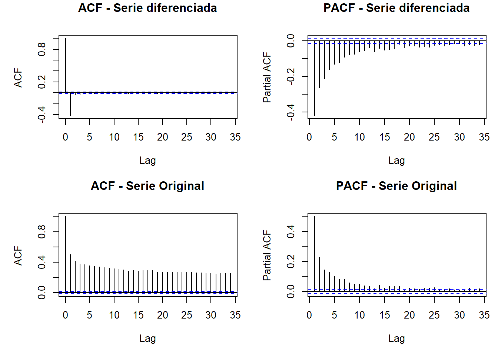

Capítulo: 2 Entregable 2
En este momento deberemos retomar la Unidad 1 en la cual se creó un minilibro que contiene el entregable de dicha unidad. Este documento tiene como repositorio GitHub (elaborado desde Markdown). Ahora, en esta Unidad 2, se debe continuar con los datos presentados en dicho entregable y se debe evidenciar, en una de las variables en el tiempo, la aproximación en promedio móvil, en rezagos y en estacionalidad. Todo lo anterior, a través de funciones y gráficas que permitan detectar patrones y ciclos de la variable.
2.1 Descripción de los datos
Code
## 'data.frame': 24941 obs. of 11 variables:
## $ time: Date, format: "1941-03-02" "1941-03-12" ...
## $ tavg: num 17.1 16.9 19 16.5 17.3 18.1 19.4 19 19.4 17.2 ...
## $ tmin: num NA NA NA NA NA NA NA NA NA NA ...
## $ tmax: num NA NA NA NA NA NA NA NA NA NA ...
## $ prcp: num NA NA NA NA NA NA NA NA NA NA ...
## $ snow: num NA NA NA NA NA NA NA NA NA NA ...
## $ wdir: num NA NA NA NA NA NA NA NA NA NA ...
## $ wspd: num NA NA NA NA NA NA NA NA NA NA ...
## $ wpgt: logi NA NA NA NA NA NA ...
## $ pres: num NA NA NA NA NA NA NA NA NA NA ...
## $ tsun: logi NA NA NA NA NA NA ...Filtrar y mirar los datos faltantes por columna.
Code
## time tavg
## 0.000000 1.972655Code

##
## Attaching package: 'dplyr'## The following objects are masked from 'package:stats':
##
## filter, lag## The following objects are masked from 'package:base':
##
## intersect, setdiff, setequal, union##
## Attaching package: 'lubridate'## The following objects are masked from 'package:base':
##
## date, intersect, setdiff, unionCode
## # A tibble: 72 × 2
## anio faltantes
## <dbl> <int>
## 1 1941 0
## 2 1942 0
## 3 1943 0
## 4 1944 0
## 5 1945 0
## 6 1959 0
## 7 1960 0
## 8 1961 0
## 9 1962 0
## 10 1963 0
## # ℹ 62 more rowsCode
